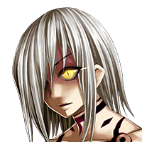
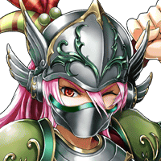
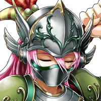

カルデス
グァァァァァァーーーー！！

エデア
ウッ……。
エデア
…………。 ラフドラニアの力を再び開放します！
ディン
おう！ カルデスの攻撃は全部防いでやるぜ。
ディン
お前なんかにエデアは 傷つけさせやしねー！
ゼブラ
余計な手出しをしてしまい 申し訳ありません。
ロクス
どうしたんだ、ディン！？ 早く手当てをしろ！！
エデア
自分の身体の状態は、 自分が一番よくわかります……。
ゼブラ
虫けらの分際で、 我が主の名を呼ぶとは恐れ多いわ！
カルデス
ゴミ虫にも等しい人間の分際で、 我をここまで手こずらせたその力
エデア
これから私は ラフドラニアの力をすべて開放します……。
ローランド
ですが、姫様。 あなたの今のその身体では……。
エデア
……いえ、命尽きようとしている この身体だからこそ、
エデア
今こそ、 カルデスを封印できると考えてます。
ディン
俺たちがどんな気持ちで ここまでやって来たと思ってるんだ！
ディン
もう一度カルデスを 封印しようとしているんだろ？
ディン
今度は眠りにつくんじゃなくて、 正真正銘、自らの命を封印に費やして。
ロクス
ボクたちは、姫様にそんなことを させるためにここに来たんじゃない！！
エデア
パルミナにいる人間全員が 犠牲になってしまうでしょう……。
エデア
このままにしておく訳には いかないのです……。
エデア
私の命が尽きかけている今、 他に何か方法がありますか？
ロクス
クッ……。 姫様、そんな聞き方をするのは卑怯です！
エデア
フフフッ……。 そうかもしれないですね……。
エデア
これから私は みんなを再び安全な場所に転送します。
ロクス
こればっかりは、姫様の指示だとしても 従うことはできません。
ロクス
……姫様が自らの命を使って封印を 作るというのであれば、
ロクス
そうすればもっと強固に カルデスを封じることができるはずです。
ローランド
我らはもうすでにその命を エデア殿に預けている身だ。
ローランド
ましてや、パルミナのためにこの身を 捧げられるのなら本望というもの……。
ディン
パルミナのため、とかは 置いておくとしても、
ディン
仲間が犠牲になるのを、ただ指をくわえて 見ているだけなのはもうゴメンだ。
ディン
ま、それは、エデアも含めて、 ここにいる全員が同じ気持だと思うがな。
エデア
私がダメと言っても、 みんな聞かないんでしょうね……。
カルデス
我の慈悲深さに、 感謝して死ぬのだな……。
エデア
私たちにはもうあなたを 倒す力は残っていないのかもしれない……。
エデア
でも…倒せなくとも、 命をかければ、できることは、あります！
ゼブラ
あの女の鎧の力は危険です。 この場はお任せください。
エデア
みんな！ 私に……あなたたちの命をください！！
ローランド
この年寄りに剣聖として最後の戦場を 与えてくれたこと感謝しております。
ローランド
あなたの生き様は、生き残った人々に 必ず明るい未来を示すでしょう。
ローランド
ラフドラニアよ！ 我が命をすべて吸い取れ！
ローランド
そして、忌まわしき邪神を 封じるのだ！
ディン
エデア、面白くもなかった俺の人生を 変えてくれたのはお前だ。
ディン
まあ、折角できた仲間だ。 本当はもう少し楽しみたかったけどな。
ロクス
あなたのことをお守りできず 申し訳ございません……。
ロクス
しかし、これからも私はずっと あなたのお側にいます。
ロクス
ボクの命はここにある！ 姫様のために生きた命がな！
ロクス
お願いだから姫様の最後の 願いを叶えてくれ！！
エデア
私は素晴らしい仲間に 出会えて幸せでした……。

エデア
この命が消えても永遠に……。
エデア
神に仕えし者よ……。 遅かったようですね……。
カルデス
我の力が…… 抑えつけられていく…だと！？
エデア
魔統神カルデス！ あなたをこの地に封印します！
エデア
私と仲間たちの命で作ったこの封印…… 破れるものなら破ってみなさい！！
カルデス
我は必ず甦る！ 貴様たちに罰を与えるために！
ゼブラ
最後に我を異界から飛ばしたのは 確かにカルデス様のお力だった……。
ゼブラ
では、御身が復活する時のため、 我はグランガイア支配に動き始めます。
ゼブラ
……まずは手始めに、パルミナの人間どもを 血祭りに上げてくれよう。
ゼブラ
国をあげて神に逆らい、戦いを挑んだ罪、 万死に値するわ！！
ゼブラ
お前たちの愚行で お前たちが守りたかった者は滅びるのだ！
その後、カルデスはエルガイアより訪れたある召喚師によって完全に滅ぼされることとなる。
しかし、その時のカルデスの身体は封印の影響で崩壊しかけていたという。
後にある召喚老は語る。四戦士の魂は死してなおカルデスに抗い続けたのだと……。